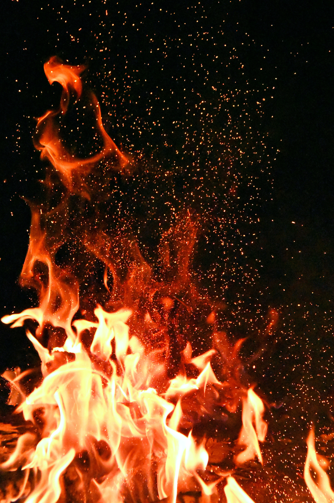

You are earth

Photo by Pixabay: https://www.pexels.com/photo/planet-earth-87651/
The earth signs are grounded and sensible. They are the most sensible and stable of the signs They prefer to create a plan and implement it one step at a time. They prefer having a routine or pattern to stick to, and will get upset if that routine is broken or interrupted. They are stubborn and stick to their guns when it comes to their ideals, and are rigid in their ways.
On the downside, earth signs feel like life is stagnant. Further, due to being so grounded, they can lose sight of the spiritual or emotional sides of life.
You are air

Photo by Darius Krause: https://www.pexels.com/photo/white-clouds-under-blue-sky-2931915/
The air signs are intellectual people and enjoy learning about things. They are social people with excellent communication skills. They are social butterflies, and they enjoy talking about whatever happens to be on their mind. Air signs are restless and often on the go. Rational and logical, they think things through and are great decision makers. They are adventurous and will take risks. This sometimes gets them in trouble, but alternatively can lead to accomplishing great things.
On the downside, because they take the time to think things through and can’t come up with an immediate answer, they can be seen as indecisive. Additionally, they can feel detached and are often disconnected from their emotional side. Being less grounded, they can seem spacey and unreliable.
You are water

Photo by Pixabay: https://www.pexels.com/photo/body-of-water-261403/
Water people are super intuitive and often make decisions based on their intuition, which is usually spot on. They are empathetic and can empathize with others’ situations.They are the most nurturing of all the signs. Water signs are creative and artistic by nature. They are often mysterious because of their guarded personalities. Water signs are highly observant and like to sit back and watch. Things seem intense, especially when it comes to the water signs’ emotions. On the downside, water signs get hurt easily due to their sensitive natures. To others, they can come across as too emotional, and therefore, irrational. Because they are more observant, they can come across as aloof.
You are Fire
Photo by Adonyi Gábor: https://www.pexels.com/photo/red-and-orange-fire-1558916/
The fire signs are just like they sound, full of fire and passion. They are the sign that takes action instead of just thinking about their ideas and passions. They are natural leaders and strive to inspire and motivate others. They are super expressive about their thoughts and ideas, not caring much about what other people may think or believe. Fire signs are courageous and will face their issues head-on. They are outgoing people who are bold. They are dominant and aren’t afraid to strike up a conversation. They are often the life of the party. Fire signs are competitive and like to win whatever it is they may be competing for.
The downside of the fire signs is that they can be temperamental and impatient. They are sometimes overwhelmed, overconfident, and can be selfish.
You are mixed
Photo by Roman Pohorecki: https://www.pexels.com/photo/close-up-photography-of-bonfire-on-beach-sand-16704/
paragraph about mixed